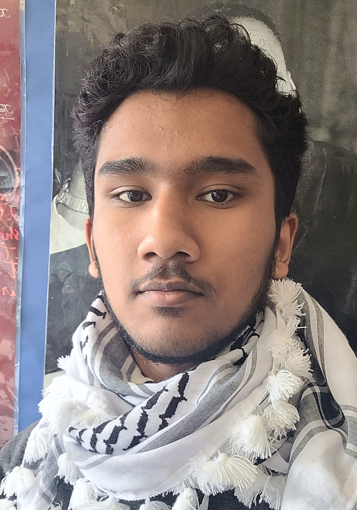

WHO AM I? 🤔 Hi. I am Tanwar Ahmed Chowdhury, a high school student currently living in Toronto, Canada. I am originally from Sylhet, Bangladesh but used to live in Dhaka, Bangladesh and have lived there for a long time. Growing up, I have always been an extrovert kid and was always curious and liked to question about everything that would happen around me. Let it be about something at home, at school or somewhere outside. Outside of my study time, I usually just go to the gym, sometimes help my mom and dad for some work at home, play video games, watch reels, read news (yes "news" 😭) or even just write something on this website you are at right now if there is something to write about. Currently, I am very confused about what to study at university and what to be in the future. My time for university is very near but I still can't decide. I got a bunch of options but who knows how successful I will be. Since about 2021 or 2022 I wanted to become a pilot but it genuinely requires you to spend a huge amount of money to study for it and it isn't even easy to study in aviation. Maths and Physics are probably like the backbone of it and I genuinely do not enjoy studying Math and Physics. Then we got air traffic controller. Pretty much the same. Probably a bit less pressure but yeah there is. Then we got accountant (yeah a whole different field). Now, the issue is, if you want to earn a good amount of money as an accountant, you have to pretty much work in positions which deal with interests which I definitely do not want to as my religion prohibits me from dealing with interest. Next up is a diplomatic correspondent (yes this is another field). I genuinely considered that because even my dad is a journalist and works with diplomacy and I kind of like diplomacy myself even though I know this job might be hard and risky too. But it doesn't matter. But problem is this job is all about competition and luck. If you want to be famous in this field, luck required. If you want to earn good money, you need to join a good and rich company and that's where competition is and also it isn't that easy to be a diplomatic correspondent. You start with like being a reporter and they get really less amount of money. So it will be a struggle for years and for some reason my dad literally tells me to never select this job. God knows why. Anyways, next up another whole different field, it is in cybersecurity. Now, I don't know what job I want to do in cybersecurity but I feel pretty interested towards it but people even got rants for this field and it is "AI is going to take this job". But some cybersecurity experts such as my teachers are saying it will be fine and humans are going to be needed still, so I am just still keeping it on top of my head. |